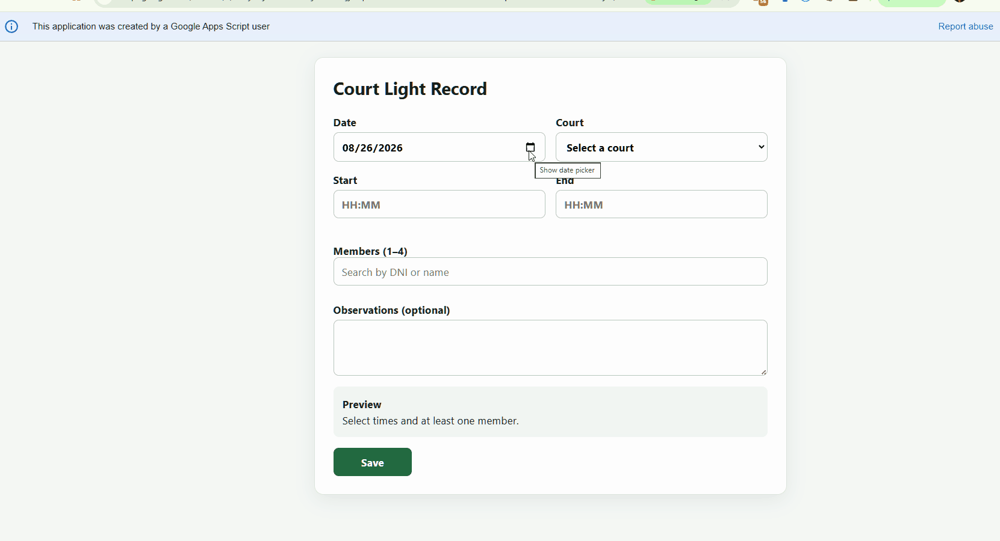
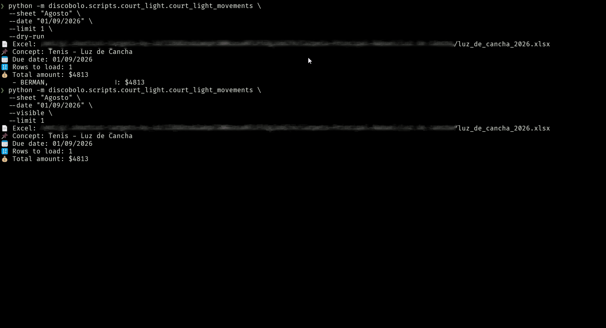

Club Operations Automation Suite
Court Light Operations Automation
A reliable workflow that records court-light usage, calculates monthly member charges in Excel, and uploads validated results to Sytech while keeping every stage traceable and safe to rerun.
Operational Problem
Court-light sessions involve multiple members, exact usage times, guest exclusions, monthly calculations, and a final upload to the club's management system. Handling those transitions manually creates opportunities for missed records, duplicate charges, and difficult recovery when a step is interrupted.
Three-Step Workflow
1. Record Court-Light Usage
- An authorized Google Apps Script web app captures each session.
- Staff enter the date, court, and 24-hour start and end times.
- A searchable canonical member list prevents ambiguous selection.
- Usage minutes are allocated equally among the selected members.
INVITADOentries are retained as non-billable guests.- Completed records are saved to Google Sheets for controlled processing.

Demonstration media coming later
No member or operational data will be shown until a sanitized recording is available.
assets/gifs/court-light-recording.gif
2. Aggregate Minutes and Calculate Charges
discobolo court-light update YYYY-MMselects the processing month.- A dry-run previews the planned changes before any workbook is updated.
- Only pending source rows are processed and grouped monthly by member.
- The workflow validates and updates
luz_de_cancha_2026.xlsx. - Excel formulas calculate the monetary charges.
- Source rows are marked as exported only after the update succeeds.
Demonstration media coming later
The future recording will use sanitized workbook data.
assets/gifs/court-light-workbook-update.gif
3. Upload Charges to Sytech
discobolo court-light upload YYYY-MMselects the completed month.- Dry-run output and explicit confirmation protect the live upload.
- Selenium automates the validated entries in Sytech.
- Successful rows are skipped on reruns.
- Success and error status are recorded for review and recovery.

Demonstration media coming later
The future recording will exclude private URLs and financial or member data.
assets/gifs/court-light-sytech-upload.gif
Engineering and Reliability
Reliable inputs
sync-memberskeeps the canonical selection list current.- Duplicate detection and source fingerprints identify previously handled records.
- Guest exclusions ensure
INVITADOusage is never billed.
Safe execution
- Backups protect the workbook before material updates.
- Recovery journals preserve progress across interrupted operations.
- The repository's 72 passing tests cover the automation's core behavior.
Technologies
PythonTyperGoogle Apps Script
Google Sheets APIOAuthopenpyxl
SeleniumExcelunittest